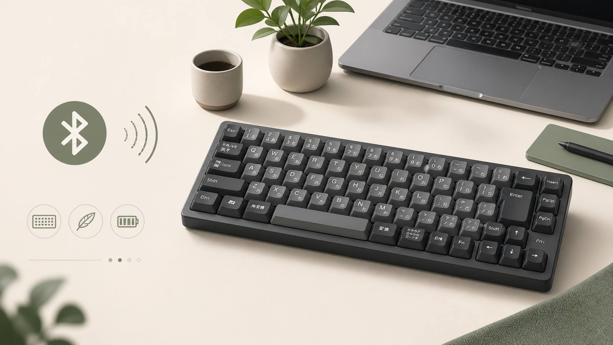

MAC PERIPHERALS / DESK SETUP
MX Keys SをMacで使う前に。配列と接続を決める購入ガイド
広告：本ページにはAmazonアソシエイトリンクが含まれます。商品情報は公式情報とAmazon掲載情報を確認して作成しています。実機での検証結果ではありません。

Logicool MX Keys Sの配列、接続方式、複数端末切替、設置幅を公式情報から整理し、Macで使う条件を判断する購入ガイドです。スペックの多さではなく、先に用途と設置条件を決めてから判断します。

ロジクール MX KEYS S ワイヤレス キーボード for Mac KX800sMSG US配列 Bluetooth Smart Actions 対応 Mac iPad iOS 無線 薄型 USB TYPE-C 充電式 ワイヤレスキーボード KX800s スペースグレー 国内正規品
仕様と販売状況はAmazonの商品ページで確認できます。
Amazon.co.jpで確認する公式仕様から先に確認すること
購入前は、商品名の印象よりも公式ページの仕様表を起点にします。MX Keys SはBluetooth Low EnergyとLogi Bolt USBレシーバーによる接続、複数端末の切替、Mac対応が公式仕様に記載されています。自分のMacで必要な接続方式と配列を先に確認します。
- 使う機器と必要な規格を先に書き出す
- 設置場所と、交換・清掃・持ち出しの動線を測る
- 公式の対応条件を自分の機器の仕様と照合する
使い方と設置を分けて考える
毎日使う機能と、たまに使う機能を分けると、購入後の運用が具体的になります。長文入力とショートカットを中心に使うなら、テンキーの有無、手首の位置、バックライトの必要性を先に決めます。複数端末を切り替える場合は、各端末での入力ソースも確認します。
この整理は、機能を使い切れるかだけでなく、使わない機能のために設置や管理を増やさない判断にもつながります。
向く条件・見送る条件
向く条件
- 公式仕様のうち、必要な機能が具体的な作業に直結している
- 設置・交換・保守の動線を確保できる
- 現在の機器と接続条件を照合できている
見送る条件
- 数字や端子数だけで選び、用途がまだ決まっていない
- 設置場所や周辺スペースを測っていない
- 対応条件を確認せず、購入後に解決しようとしている
迷う場合は、まず用途を一つに絞り、必要な仕様が一つでも欠けるかを確認してから判断してください。関連するGearline Labの記事一覧も比較材料になります。
根拠と商品情報
ロジクール MX KEYS S ワイヤレス キーボード for Mac KX800sMSG US配列 Bluetooth Smart Actions 対応 Mac iPad iOS 無線 薄型 USB TYPE-C 充電式 ワイヤレスキーボード KX800s スペースグレー 国内正規品
仕様と販売状況はAmazonの商品ページで確認できます。
Amazon.co.jpで確認する